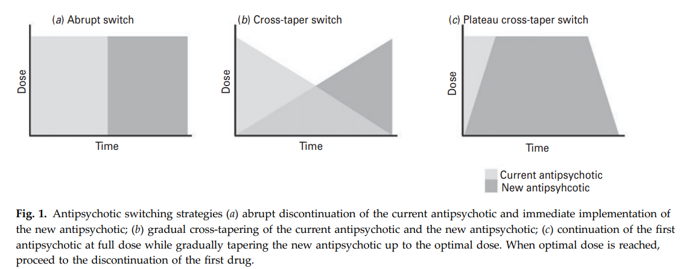

50 교체, 중단, 다약제 병용
50.1 약물 변경
50.1.1 약물을 바꾸는 이유
항정신병 약물은 바꾸는 이유는 크게 세 가지, 즉 1) 치료 효과의 부족, 2) 부작용, 3) 환자 또는 보호자의 선호도이다. 조금 더 구체적으로 살펴본다면 다음과 같다.[1]
충분한 용량을 써도 관해에 도달하지 못할 때
아무리 오래 유지 치료를 해도 기능 회복을 하지 못할 때
적절한 유지 치료에도 불구하고 재발할 때
잔여 증상이 해결되지 않을 때
효과를 보기 전에 부작용이 먼저 나타날 때
약물에 분명한 효과를 보았지만, 부작용이 더 심각하다고 여겨질 때
신체적 상황의 변화로 말미암아 약을 바꿔야할 때
순응도가 낮아 다른 형태(주사제)로 바꿔야 할 때
환자나 보호자가 원할 때
약물을 바꾸고자 할 때는 그 전에 몇 가지 확인할 사항이 있다. 만약 효과 부족때문이라면 이전 약물이 왜 실패했는지 따져보아야 한다. 진단이 정확한지, 다른 동반 질환이 회복을 막고 있는지, 순응도는 양호했는지, 치료 용량 및 기간은 충분했는지를 확인한 연후에야, 이전 약에 대해 치료가 실패했다고 선언할 수 있다. 이런 과정은 새로 바꾸는 약물에 대한 반응을 예측하는데 필요할 뿐 아니라, 한번 실패했던 약물을 장래의 약물 선택 과정에서도 배제할 수 있도록, 분명히 기록해놓아야 할 필요가 있기 때문이다.
부작용때문에 약을 바꾸는 경우에도 역시 부작용이 정말 약물에 의한 것인지, 호소하는 부작용이 치료 효과보다 더 중요한지, 다른 방법을 통해 부작용이 해결될 수 있을지 등을 따져보아야 한다. 환자에게 양호한 반응을 나타내는 약물을 찾기가 쉽지 않은 상황에서, 다른 식으로 해결될 수 있는 부작용때문에 적합한 약물을 포기한다는 것은 안타낍다.
환자 및 보호자가 약물 변경을 요청하는 경우도 마찬가지이다. 환자의 선호도를 중요시해야 한다는 것은 당연하지만, 환자의 선택이 단편적인 정보, 치료에 대한 양가 감정, 병식의 부족때문이라면 무시할 수 있어야 한다. 따라서 환자나 보호자가 변경을 요청할 때에는 구체적으로 그 이유를 물어보아야 한다.
결론적으로 현재 사용 중인 약물에 대해 100% 만족하지 못한다 하더라도, 경솔하게 약물을 바꿔서는 안 된다. 모든 결정은 예상되는 이득과 잠재적인 위험을 저울질 해보아야 한다. 만약 급성 정신병적 삽화에서 회복된지 얼마 안 되었고, 삽화 중 사용했던 약물이 효과적이었다면 섣불리 바꾸면 안 된다. 현재 장기지속형 주사제를 안정적으로 투여받고 있으며, 과거 경구 약물에 순응도가 떨어졌다면, 약물 교체를 위해 주사제를 포기해서는 안 된다. 과거 폭력, 자살/자해, 심각한 피해망상 등 위험한 증상을 보였던 환자라면, 위기를 넘기는데 도움이 되었던 약물을 섣불리 바꾸지 말아야 한다.
50.1.2 약물 변경 스케줄
약물 변경의 일반적인 스케줄은 다음 그림___과 같이 세가지로 나눌 수 있다.

[2]
첫번째 직접 교체(direct switch)는 어제까지 기존 약물을 유효 용량으로 쓰다가, 오늘부터 갑자기 새로운 약물을 타겟 용량으로 시작하는 것이다. 두번째 교차 교체(cross titration)는 2~3일에 한번씩 25% 내외로 기존 약을 감량하고, 새 약을 증량하는 방법이다. 세번째 중첩 교체(overlap switch)는 기존 약을 줄이지 않은 상태에서 새 약을 천천히 증량하여 목표 용량에 도달하게 한 다음, 기존 약을 역시 천천히 끊는 것이다.
실제 임상에서는 교차 교체를 가장 많이 사용하며, 그 다음으로 중첩 교체를 많이 쓴다. 교차 교체는 주로 안정된 환자의 유지 치료 시에 약물을 바꿀 때 사용되며, 항정신병 약물의 총 용량이 거의 일정하게 유지되기 때문에 부작용이나 재발 위험을 최소화할 수 있다. 그러나 시간이 많이 걸리기 때문에 시간적 여유가 많을 때나 사용가능하다. 반면 직접 교체는 금단 현상이 일어날 위험이 크고, 새로운 약도 적정 과정을 거치지 않기 때문에 부작용 위험이 크다. 그러나 클로자핀에 의한 무과립구증처럼 급박하게 기존 약을 끊어야 할 상황이라면 이 방식을 쓸 수 밖에 없다.
중첩 교체는 가장 보수적인 방법이다. 기존 약을 줄이지 않은 상태에서 새 약을 증량하기 때문에, 과정 중에는 상당히 고용량의 항정신병 약물이 투여된다. 이는 새로운 부작용 가능성을 높이지만, 아직 환자의 증상이 안정화되어 있지 않고, 새 약이 효과가 있을 지 없을 지 확신하기 어려울 때는 이 전략을 취할 수 밖에 없다.
교차 교체의 감량 및 증량 속도는 약물의 반감기에 따라 달라진다. 기존 약물과 새 약물의 반감기가 비슷하거나, 기존 약물의 반감기가 더 길다면 두 약물을 비슷한 속도로 감량/증량하면 된다. 기존 약의 반감기가 길기 때문에 금단 증상이나 갑작스런 재발 가능성도 낮은 편이다. 하지만, 기존 약의 반감기가 새 약에 비해 훨씬 짧다면 감량은 천천히 하되 증량은 빨리 한다. 왜냐하면 반감기가 짧은 약은 금방 혈중 농도가 감소하면서 금단을 일으키고, 반감기가 긴 약은 항정상태에 이르기까지 긴 시간이 걸리기 때문이다. 따라서 뒤의 약을 빨리 올리지 않으면 중간에 항정신병 약물의 혈중 농도가 떨어지는 구간이 생기게 된다.
일반적인 교체 기간은 급성기때는 2주 정도이지만, 만성 환자라면 4주에서 길게는 8주 이상 걸리기도 한다. 시간적 여유가 있다면 천천히 하는 것이 좋다. 그 밖에도 약물 상호작용, 기저질환, 연령 등 개별 상황에 따라 교체 속도가 달라질 수 있다.
예외가 되는 것은 아리피프라졸과 같은 도파민 효현제이다. 이 약은 반감기가 길어 금단 증상이 없기 때문에 바로 끊어도 별 문제가 없지만, 몇 가지 주의할 사항이 있다. 먼저 기존 약을 아리피프라졸로 교체할 때를 고려해보자면, 후자는 항콜린 효과가 전혀 없기 때문에, 기존 약을 너무 빨리 끊었을 때 콜린성 반동이 생길 수 있다. 또한 기존 약물에 의해 D2 수용체가 보상적으로 과항진 되어있다면, 아리피프라졸이 효현제로 작용하여 도파민 과활성이 일어날 수 있다. 이런 때는 기존 약물을 최대한 천천히 감량하여, D2 수용체 차단이 갑자기 풀리지 않도록 해야한다.
아리피프라졸에서 타 약물로 교체하는 경우에는, 새 약물이 목표 용량에 도달할때까지 기다렸다가 아리피프라졸을 신속히 끊는다. 아리피프라졸은 반감기가 75시간으로 항정신병 약물 중 가장 긴데다가, 일정 용량 이상이 되면 더 많이 쓰나 적게 쓰나 D2 차단 정도는 동일하기 때문이다. 따라서 새 약물의 용량이 조금씩 높아진다 하더라도 그에 맞춰 아리피프라졸을 조금씩 줄일 필요가 없다.
이러한 요령을 비롯하여, 항정신병 약물을 변경할 때 참고할 수 있는 구체적인 스케줄이 몇몇 웹사이트에 잘 정리되어 있다.1
50.1.3 장기지속형 주사제 변경 전략
장기지속형 주사제와 관련된 변경 전략은 1) 경구 약물에서 주사제로 바꿀 때, 2) 주사제에서 경구약으로 바꿀 때, 3) 주사제에서 다른 주사제로 바꿀 때로 나누어 생각할 수 있다. 각종 장기지속형 주사제는 설명서에 제약사가 추천하는 가이드라인이 나와있기 때문에 이를 참조하면 된다. 현재 한국에 도입된 장기지속형 주사제로는 Invega Sustenna®와 Abilify Maintena®가 대표적이기 때문에, 아래에는 주로 두 약물에 대해 설명하고자 한다.
50.1.3.1 경구제를 주사제로 바꾸는 경우
Invega Sustenna®는 신속히 혈중 농도를 높이기 위해 첫번째 주사를 맞고 1주일 후에 다시 주사를 맞는다. 이러면 첫번째 주사한 후 8일 후면 목표 농도에 도달한다. 따라서 주사제로 변경하면서 바로 기존 약물을 끊어도 큰 문제가 생기지 않는다. 다만 반감기가 짧은 퀘티아핀이라던지, 항콜린 효과가 큰 약물에서 교체할 때는 기존 약물을 1~2주 이상 겹쳐 사용하는 것이 필요할 수 있다.
Abilify Maintena®은 첫번째 주사를 맞은 후 유효 용량에 도달하기 까지 약 2주 이상의 시간이 걸린다. 따라서 주사제를 맞은 날부터 기존 경구 약물의 용량을 절반으로 낮춘 후, 2주가 지난 시점에서 경구 약을 끊는다. 다만 기존 약물이 항콜린 효과가 강했다면, 2주가 아니라 4~6주 가까이 병용 투여할 수도 있다. 물론 이는 기존에 아리피프라졸을 써본 경험이 있었던 환자에게 해당되는 것으로, 그런 경험이 없었던 환자라면 일단 기존 경구약을 경구 아리피프라졸로 바꾼 후, 적어도 2주 이상 내약성을 확인한 후에 주사제로 바꾸는 과정을 거쳐야 한다.
50.1.3.2 주사제에서 경구제로 바꾸는 경우
주사제는 4주 동안 비교적 평평하게 유효 농도를 유지하는데다가, 약물을 끊어도 4~5개월 이상 약물이 체내에 잔류하기 때문에, 주사 약제를 바로 끊어도 상관없다. 신속히 증량해도 상관없는 약물이라면, 주사제의 다음 예정일부터 경구 약물을 쓰기 시작하면 되지만, 클로자핀과 같이 적정하는데 긴 시간이 걸리는 약이라면 예정일이 다가오기 전부터 쓰기 시작한다.
50.1.3.3 주사제에서 주사제로 바꾸는 경우
Invega Sustenna®에서 Trinza®로 바꾸는 경우에는 고민할 바 없이, Sustenna®의 다음 예정일부터 Trinza®로 교체하면 된다. 그보다 복잡해지는 것은 Invega Sustenna® 와 Abilify Maintena®간에 약물을 교체하는 것이다. 이 역시 경구 약에서의 같이 1) 직접 교체, 2) 교차 교체, 3) 중첩 교체 전략을 모두 구사할 수 있다. 직접 교체할 때는 기존 주사제의 다음 예정일에 바로 새 주사제를 투여하는 것이고, 교차 교체는 기존 주사제와 새 주사제를 15일 간격으로 번갈아 맞으면서 기존 주사제의 용량을 줄여나가는 것이다. 마지막으로 중첩 교체는 역시 15일 간격으로 번갈아 맞되, 새 주사제가 항정상태에 이르기까지 기존 주사제 용량을 줄이지 않고 유지하는 것이다.
하지만 대부분의 의사들은 지나치게 고민하지 않고 직접 교체를 행하고 있으며, 별 문제없이 잘 유지된다. 다만 약물이 바뀌는 교체 기간 중 환자 상태가 흔들린다면 임시로 경구 약을 투여하여 안정화시킨다.
50.1.4 약물 교체 후 관리
약물 교체 후에는 환자 상태가 불안정할 수 있기 때문에 밀접한 관찰이 필요하다. 교체의 목표를 달성할 수 있었는지, 새로운 부작용은 없는지, 순응도에 변화가 생기지는 않았는지 평가를 해보아야 한다. 약물을 바꾼 후 정신병적 증상이 일시적으로 악화되는 경우가 있지만, 그보다는 비특이적인 불안, 초조, 불면, 추체외로 증상때문에 환자가 다시 이전 약을 달라고 요구하는 경우가 많다. 이러한 상황에서는 1) 환자를 안심시키고 조금 더 지켜보거나, 2) 기존 약물의 감량 속도를 줄이거나 오히려 일시적으로 증량할 수 있으며, 3) 항콜린 약물, 벤조디아제핀 등 보조 약물을 추가하여 해결한다. 만약 보조 약물을 사용했다면, 약물 교체가 끝나 안정화될 때까지 중단하지 않는 것이 좋다.
가장 난감한 것은 약물 교체 과정 중에 정신증이 재발하거나 오히려 악화되는 것이다. 이런 상황은 특히 클로자핀, 올란자핀을 다른 약물로 바꿀 때 자주 발생한다. 이 때는 벤조디아제핀을 충분히 사용하면서, 중첩 교체로 전략을 바꾼다. 이 과정 중에 상당히 고용량의 항정신병 약물에 노출되므로, 부작용에 특히 조심해야 한다는 것은 말할 것도 없다. 이렇게 해도 증상이 좋아지지 않는다면 교체를 포기해야 한다.
50.2 약물 중단
50.2.1 약물 중단이 가능한가?
지금 당장 눈앞에서 증상에 시달리는 환자에게, 의사는 어떻게든 항정신병 약물을 투여하기 위해 안간힘을 쓴다. 운좋게 증상이 가라앉은 후에는, 재발을 막는다는 명목 하에 약을 끊지 않도록 환자를 설득하느라 애를 먹는다. 이미 두세번 재발한 경력이 있는 환자에게는 평생 약을 먹어야 한다며 강하게 밀어붙이고, 그것이 환자를 위한 최선의 길이라고 스스로 다짐한다.
모두가 이렇게 믿고 있는 상황에서 네덜란드의 정신과 의사인 Lex Wunderlink는 2013년에 도전적인 논문을 발표하여, 정신의학계를 혼란에 빠뜨렸다.[3] 시간을 거슬러 올라가 6년전인 2007년에 그는 초발 환자들을 1) 일찍 약을 끊는 군과 2) 계속 유지하는 군으로 나누어 재발율을 비교하였는데, 전자가 훨씬 재발율이 높았기 때문에 기존 상식을 재확인하는데 그쳤다.[4] 그러나 이 연구에 참여했던 동일한 환자들을 수소문하여 7년 후에 근황을 조사했을 때, 오히려 약을 일찍 끊었던 군의 회복 정도가 계속 약을 쓴 환자들에 비해 유의하게 더 높다는 예상하지 못한 결과가 발견되었다.[3] Wunderlink는 이 결과를 근거로, 무분별한 장기 유지치료가 환자의 회복을 오히려 방해한다는 과격한 주장을 펼쳤다. 이 논문은 즉시 큰 파장을 일으켰으며, 많은 정신과 의사들이 해당 논문의 결과를 반박하는 글을 올리기도 하였다.[5–7] 그러나 그가 던졌던 의미심장한 질문, 즉 “기한 없는 항정신병 약물 유지 치료가 과연 필요한가?”라는 질문은, 10년이 지난 지금에도 반향을 일으켜 후속 연구들을 양산하고 있다. 예를 들어 Harrow 등[8]은 시카고 인근 지역의 환자들을 20년 넘게 추적한 결과, 약물 치료 시작 후 2년 만에 약을 끊었던 환자들이 오히려 회복율이 높았고, 재입원율도 낮았다는 결과를 보고하였다.
물론 이런 연구들의 치명적인 허점, 즉 “약을 끊어서 예후가 좋아진 것인지” 아니면 “약을 끊을 수 있을만한 환자들이니까 약을 끊었던 것인지”라는 의문은 아무도 확인할 길이 없다. 마치 닭이 먼저냐 달걀이 먼저냐는 질문처럼 어떤 결과에도 도달할 수 없는 무의미한 논쟁만 이어질 뿐이다.[9] 진정 엄격한 조건 하에 임상 시험이 이루어지지 않는 한, 이 질문에 대한 답은 얻어내기 어려울 것이다.[10,11]
의미없는 논쟁을 지속하는 것 보다는, 평생 유지 치료가 필요한 환자들과 어느 순간에는 약을 끊는 것이 유리할 환자를 구분할 수 있는 방법을 찾는 게 더 중요할 것이다. 또한 만약 끊는다면 언제까지 쓰고 끊는 것이 안전하느냐는 질문도 빼놓을 수 없다. 초발 환자 중 약 ⅓ 정도는 약을 끊고 지켜보아도 궁극적으로는 양호한 예후를 보인다.[12] 그렇다고 이들이 한번도 재발을 안 했다는 뜻은 아니다. 약을 쓰나 안 쓰나, 절반이 넘는 환자들은 재발한다. 그러나 잦은 재발에도 불구하고 장기 예후가 좋았다는 것은, 이 환자들이 애초에 고유한 특성을 지니고 있었을 것임을 시사한다. 핀란드에서 2010년도 초반에 행해진 코호트 연구2는 이런 특성을 찾고자 애를 썼다.[13] 그러나 기대와는 달리 독신, 조기 발병, 점진적인 발병, 자살 사고, 잦은 재입원 등 상식적인 요인 외에는 장기 예후를 말해주는 예측 지표를 찾지 못했다.[14] 체계적 문헌검색을 통한 연구에서도 치료받지 않은 기간이 짧고, 나이들어 발병했으며, 발병시 증상이 덜 심하고, 재발 횟수가 적고, 낮은 용량의 항정신병 약물로 유지치료를 한 환자들이 성공적으로 약을 끊을 수 있었던 것으로 나타났다.[15] 그러나 이러한 특성들은 예측 인자라기보다는 예후가 좋은 환자들이 자연스레 보이는 경과의 양상일 뿐이다.
2 Northern Finland 1966 Birth Cohort study
유지 치료를 하는 기간 또한 의문점 투성이이다. 환자들 뿐 아니라 많은 의사들은 암의 5년 생존율을 빗대어, 조현병도 몇 년 이상 재발하지 않으면 완치된 것으로 보아도 된다는 기대를 갖고 있다. 그러나 사실 암에서도 5년동안 재발하지 않으면 완치 판정을 내릴 수 있다는 과학적 근거는 없다.3
지침서에서 제시되는 유지 치료 기간은 초발인 경우 최소 1년 반, 재발인 경우 2~5년이다.[18] 그나마 절반 이상의 지침서들은 유지 치료의 권장 기간을 언급하지 않고 있다.[19] 재발 방지 효과를 평가하는 임상 시험도 대부분 1년 미만으로 설계되는데다가[20], 실제 임상에서도 환자들이 이 기간을 채우는 비율이 매우 낮기 때문에, 이 기간이 얼마나 유효한 지는 경험을 쌓기 힘들다.[21,22]
더군다나 문제가 되는 것은 오래 유지 치료를 한다고 해서, 치료를 중단한 후 재발율이 낮아지는 게 아니라는 것이다. [23,24] 즉 유지 치료를 1년을 하나 5년을 하나, 약물을 중단한 그 순간부터 일정한 재발 위험에 노출되게 된다. Tiihonen 등[25]이 분석한 바에 따르면, 8년에 걸쳐 유지 치료를 한 후에도 재발의 위험은 전혀 줄어들지 않았다. 마찬가지로 조현병에서 회복되는 비율은 처음 2년이 지나면 거의 일정하게 유지되며, 시간이 지난다고 회복 가능성이 높아지지 않는다.[26] 이러한 당혹스러운 결과들은 오랜 유지 치료가 회복률을 끌어올리지 못하며, 5년 생존률과 같은 기준을 적용하기 어렵다는 것을 말해준다.[27] 어차피 재발을 막을 수도 없고, 약물 치료가 회복률에 별 영향을 미치지 못하는 것이라면, 약물을 일찍 끊어서 약물에 노출되는 기간이나 최소화해보자는 마음을 품을 수도 있다. 그러나 재발은 당사자는 물론 주위에 커다란 상처를 남길 뿐더러, 재발을 반복할수록 점점 더 관해 가능성이 떨어지는 법이니, 이는 너무나 위험한 발상이다.
비겁하게 들릴 수도 있는 변명이지만, 지금까지 의사들은 재발의 탓을 의사의 권고를 무시하고 일찍 약을 끊어버린 환자에게 돌려왔다. 충분한 시간 동안 약을 먹고 재발을 막다보면 완치에 이를 수도 있다는 희망을 주고 있지만, 충분한 시간이 어느 정도인지는 아무도 알지 못한다.
50.2.2 약물 중단의 방법
앞 절에서 살펴본 주장이 사실이라면, 유지 치료는 분명히 재발을 막는데 도움이 되지만, 회복을 이끌어내는데는 별 도움이 되지 않는다. 즉 약물 치료를 하지 않아도 잘 지낼 ⅓ 에 속하는 환자는 애초부터 정해져 있으며, 유지 치료를 하건 안 하건 그 운명이 크게 바뀌지 않는다. 이들을 미리 찾아낼 수 있다면 고민할 필요가 없겠지만, 현재로서는 그런 방법이 존재하지 않는다. 남아있는 한가지 방법은, 관해에 도달하고 일정 기간이 지난 후부터 조심스럽게 약을 줄여보면서, 이 환자가 양호한 예후의 ⅓ 에 속하는 지 아닌 지를 확인해보는 것이다.
이와는 좀 다른 개념이지만 간헐적 치료4는 1960~70년대에 등장한 고전적인 기법으로, 양성 증상이 심할 때만 약물 치료를 하고 증상이 해소되면 바로 끊는 전략이다.[28] 의도는 좋았으나, 어떤 식으로 임상 시험을 진행해도 지속적 유지 치료에 비해 재발 방지 효과가 떨어졌다. 메타 분석에서는 재발율이 2배 이상 높아지는 것으로 나타났으며[28], 심지어 발병 후 2년 이상 좋은 경과를 유지했던 환자에서도, 이후 간헐적 치료 전략을 구사했더니 재발이 반복되었다.[29] 이 전략이 의미가 있다고 믿는 의사들조차, 잦은 재발로 인해 환자들이 부담해야 할 손해가 너무 크기 때문에 추천할 수 없다고 결론지었다.[27] 그러나 정신병적 증상을 보이는 기분 장애 환자라든지, 치매 환자에게는 간헐적 치료 전략이 유용하게 쓰이고 있다.
4 간헐적 치료 (targeted intermittent treatment): 이는 휴약 기간(drug holiday)이나 확장된 투약(extended dosing)과는 성질이 다르다. 이 둘은 약물 투여를 최소화하더라도, 유지 치료를 지속하는 것이지만, 간헐적 치료는 재발의 기미가 보이지 않는 한 약물을 쓰지 않는 것이다.
간헐적 치료는 증상이 사라지면 비교적 신속히 약을 끊는 방식을 채택했기 때문에, 최대한 천천히 약을 줄여야 한다는 최근의 건해와는 어긋난다. 당시만 해도 금단 증상이나 도파민 초과민화 현상에 대한 이해가 없었기 때문에, 빨리 끊는 것 자체가 증상 재발을 자극한다는 것을 알지 못했다. 이러한 문제를 예방하기 위해선, 단약의 기간을 짧으면 6개월에서 길면 1~2년 가량으로 충분히 잡아야 할 것이다. 속도가 중요하다는 것은, 경구 약물을 끊을 때와 장기지속형 주사제를 끊을 때, 후자에서 훨씬 재발률이 낮다는 것에서도 엿볼 수 있다.[30] 주사제는 반감기가 길기 때문에 즉시 끊었다 해도 경구 약물을 최소 4개월 이상에 걸쳐 점진적으로 끊는 것과 마찬가지 효과를 보인다.[31] 단약 후에 생기는 콜린성 반동은 늦으면 4주 후에라도 출현할 수 있으며, 금단 운동이상증(withdrawal dyskinesia)과 같은 신경학적 증상은 단약 후 수개월이 지난 후까지 지속되기도 한다. 이런 점들을 고려하면, 적어도 수개월 이상에 걸쳐 약을 서서히 끊어야 한다는 것이 분명해진다.[32]
일괄적으로 단약 과정에 필요한 시간을 지정하기는 곤란하다. 금단 증상이나 급격한 재발이 D2 수용체의 초과민화와 관련이 있다면, 약물을 오래 사용하면 할수록 초과민화 현상이 심해지기 때문에, 만성 환자들이 더 단약이 어려울 것이라 예상할 수 있다. 그렇다면 약물을 사용했던 기간에 따라 단약에 필요한 시간도 달라질 것이다. 이 밖에도 약물의 D2 친화도, 또는 반감기에 따라 상당히 달라질 수 있다. 이러한 개개 상황의 특수성을 고려하지 않고, 몇 개월 안 에 약을 끊겠다고 미리 정하는 것은 타당하지 않다.[33]
약물 중단의 방법은 앞 절(8-4-5-2)에서 설명한 감량의 방법과 다르지 않다. 다만 문제가 되는 것은 저용량 유지와 완전한 단약의 차이일 뿐이다. 영국에서 제시한 감량 프로토콜[34]에서는 원래 용량의 1/40 정도까지 줄이고 나면 그 다음엔 완전히 끊어도 된다고 설명한다. 그에 비해 대만과 일본에서 제시된 알고리즘에서는 아무리 소량일 지라도 계속 유지하는 것을 권한다.[35] 임상에서 약물 치료의 의미가 있을 지 의심스러울 정도로 용량을 낮춰 유지하고 있던 환자가, 그마저도 끊어보았더니 얼마 지나지 않아 재발하는 경우를 종종 보게 된다. 최소 유효 용량, 혹은 그 이하의 용량을 계속 유지하는 것과 완전한 단약의 차이는 또 다른 연구 주제인데, 아직 명쾌한 결론이 나지는 않았다.[36]
50.2.3 금단 증상
급하게 항정신병 약물을 끊었을 때, 혹은 나름 천천히 줄이고 있다고 생각하는데도 금단 증상이 나타날 수 있다. 물론 가장 흔한 것은 진정 작용이 강한 약물을 끊을 때 생기는 불안과 불면이다. 이 두 증상은 진정한 금단 증상이라고는 하기 어렵지만, 불면은 환자들이 어쩔 수 없이 약에 매달리는 가장 중요한 원인이며, 의사들은 이 점을 이용하여 완전한 단약을 말리곤 한다.
진정한 금단 증상으로 문헌에서 소개되는 것은 콜린성 반동(cholinergic rebound), 초과민성 정신병(supersensitivity psychosis), 세로토닌 반동 증후군(serotonin rebound syndrome), 그리고 금단 이상운동증(withdrawal dyskinesia)이다. 애초에 항정신병 약물의 금단 증상은 1959년 Brooks[37]에 의해 처음 소개되었다. 그는 클로르프로마진을 쓰다가 갑자기 약을 끊은 28명의 환자 중에서, 17명 정도가 긴장, 공포, 안절부절, 불면, 발한, 구토 증세를 보였다고 보고하였으며, 이 증상은 2주가 지나도 사라지지 않았다고 하였다. 이후 20여년이 지나서야 콜린성 반동5이라는 용어가 만들어졌고, Brooks가 기술한 증상들이 콜린 활성의 과다항진때문에 일어난다는 것을 이해하게 되었다. 항콜린성 효과가 강한 항정신병 약물 또는 항파킨슨 제제를 갑자기 줄이면, 구역/구토, 설사, 발한, 발열, 침흘림 등 자율신경계 부조에 따른 말초 증상이 나타나며, 심할 때는 불안, 불면, 자극과민, 혼동, 정신증 등 중추신경계 증상이 나타날 수 있다. 드물지만 섬망, 강직증 형태로 나타나기도 한다.[40,41] 문헌에 소개되는 콜린성 반동 사례 중에는 클로자핀을 리스페리돈으로 바꾸었을 때가 가장 흔했지만, 클로자핀에서 항콜린 효과가 비교적 큰 올란자핀으로 바꾸었을 때도 발생했다는 보고가 있다.[40,42,43] 하지만 콜린성 반동은 진단만 잘 하면, 항콜린 제제를 추가함으로써 쉽게 가라앉힐 수 있다.
초과민성 정신증 혹은 금단 정신증(withdrawal psychosis)은 다양한 항정신병 약물을 급하게 끊었을 때 생길 수 있지만, 역시 클로자핀을 끊고 발생한 사례가 가장 많이 보고되었다.[44] 주로 약을 끊은 지 1~2주 내에 발생하나, 더 늦게 출현하는 경우도 있다.[45,46] 약을 끊고 나서 너무 빨리 증상이 악화되고, 원래 삽화보다 증상이 더 심하며, 기존 약을 다시 써도 잘 해소되지 않는다면 금단 정신증을 의심할 수 있다. 도파민 초과민성때문이라고 생각하는 학자가 있긴 하지만, 초과민성 정신증 개념은 아직 논란의 여지가 있다. 또한 금단 정신증은 콜린성 반동이나 아래 소개할 세로토닌 반동 증후군과 엄밀히 구분되지 않는다.
세로토닌 증후군은 과도한 세로토닌 자극의 결과로 초조함, 근간대성 경련, 과반사(hyperreflexia) 및 고열이 나타나는 상태이다. 이는 보통 항우울제가 과다하게 투여되면서 생길 수 있는 부작용으로 항정신병 약물과 직접적인 관련은 없다. (9-6-3절) 그러나 클로자핀을 비롯한 많은 비정형 약물이 5-HT2A 길항 효과를 보이기 때문에, 이를 갑자기 중단하면 세로토닌 증후군을 일으킬 수 있다.[47]
정형 약물 사용 시대에 금단 이상운동증은 꽤 빈번하게 보고되었다.[48] 고역가 약물을 오래 사용하여 수용체 상향 조정이 일어난 상태에서 갑자기 끊으면 마치 지연성 운동장애가 일어나는 식으로 갑작스레 불수의적 운동이 발생하거나 추체외로 증상이 악화된다. 반면 D2 수용체 친화도가 낮은 클로자핀을 갑자기 끊어도 이상운동증이 나타나기 때문에, 콜린성 반동과도 연관이 있을 것으로 짐작된다.[49] 다행히 이 상태는 지연성 운동장애와 달리 90% 이상에서 자연 회복되며, 항파킨슨 제제를 투여하면 회복을 앞당길 수 있다.[50]
50.3 다약제 병용
50.3.1 용어의 정의
Polypharmacy란 한국말로 다약제 병용, 다중약물요법 또는 다제투여 등으로 번역되는 용어로, 동시에 여러가지 약물을 투여하는 것을 의미한다. 보통 동시에 투여되는 약물의 개수로 정의되는데, 이 기준 또한 정해진 것이 없고 연구자마다 천차만별이다. 그러나 4~6개 이상을 주요 다약제 병용(major polypharmacy)으로 보는 것은 공통적이다.[51] 학계에서는 부적절한 다약제 병용 혹은 적절하더라도 과다한 다약제 병용을 부정적으로 바라보기 때문에 이를 예방하기 위해 많은 홍보와 교육에 애쓰고 있다. 그럼에도 불구하고 다약제 병용은 늘어만 가고 있는 추세이며, 모두가 외면적으로는 좋지 않다며 고개를 젓고 있지만, 실제로는 주저없이 기대고 있는 형편이다.[52,53]
사실 어느 범위까지 다약제 병용에 포함시킬 지도 불분명하다. 엄격한 정의로는 한 환자에게 동시에 다수의 약물이 처방되는 것을 의미하지만, 그보다는 하나의 질환 혹은 의학적 상태를 치료하기 위해 동시에 처방되는 것이 보다 현실적인 정의이다.[54] 한편 정신과 영역에서는 향정신성 약물(psychotropic medication)이 다수 투여되는 것으로 범위를 좁히기도 한다.[53] 즉 넓은 정의에 의하면, 다수의 질환으로 고생하는 고령의 환자가 여러 개 과를 전전하면서 많은 약을 투여받는 것이 다약제 병용에 해당되지만, 좁은 정의에 의하면 정신과 환자에게 투여되는 항파킨슨제나 변비약, 소화제 등은 다약제 병용에 포함되지 않는다. 만약 하나의 질환에는 하나의 약물이라는 기준을 적용한다고 해도, 정신과에서 흔한 병존 질환의 문제에 부딪히면 어디까지를 다약제 병용으로 제한해야 할 지 막연해진다.[55] 어떤 약물은 단일 약물 자체가 복합제인 경우도 있다. 예를 들어 Symbyax®는 올란자핀과 플루옥세틴의 복합제로 제조되며, Lybalvi ®는 올란자핀과 samidorphan의 복합제이다. 이런 약물을 투여한다고 해서, 다약제 병용으로 몰고 갈 의사는 별로 없을 것 같다.
사용되는 용어 자체도 무척 다양하고, 이들 간의 구분도 불투명하다. 병합요법(combination therapy)이란 하나의 목표를 향하여, 동일한 종류이지만 서로 다른 클래스에 속하는 약물을 동시에 쓰는 것을 의미한다. 예를 들어 양성 증상을 해결하기 위해 성질이 다른 두 가지 이상의 항정신병 약물을 사용하는 것이 해당된다. 증강요법(augmentation therapy)이란 하나의 목표를 향하는 것은 맞지만, 종류가 다른 약물을 섞어쓰는 것을 가리킨다. 치료저항성 환자에게 항정신병 약물과 함께 리튬을 사용하는 것이 이에 해당한다. 반면 부가요법(adjunctive therapy)은 하나의 질환을 향하고 있는 것은 맞지만 부수 증상들을 해결하려 할 때를 말한다. 조현병 환자가 심한 우울감을 호소할 때 항우울제를 투여하는 것이 대표적인 예이다. 이들 외에도 영어 문헌에는 add-on therapy, comedication 등 더욱 다양한 용어들이 등장한다. 그러나 이러한 용어들은 정해진 뜻이 있는게 아니라 문헌마다 혼란스레 뒤섞여 사용되기 때문에, 그때그때 문맥을 보고 이해하는 것이 좋겠다.
50.3.2 다약제 병용에 대한 비판
다약제 병용이 비판받는 주된 이유는 1) 약동학적, 약력학적 상호작용에 의해 부작용만 늘어날 위험이 크고, 2) 약을 섞어 쓰는 명확한 근거가 없으며, 3) 불필요하게 비용이 상승하기 때문이다. 비용 상승에 민감한 일부 국가의 의료 보험에서는 약물의 개수가 많아지면 보험급여를 삭감하는 시스템을 운영하기도 한다.[56] 이러한 제약에 반발하는 학자들은 필요하다면 다수의 약물을 사용하는 것은 당연하며, 보험사가 비용 문제로 이를 제재하는 것은 부당하다고 여긴다.
서구 의학이 자리잡기 이전부터 처방 혹은 약을 짓는다라는 것은 자연스레 하나 이상의 약물을 이상적으로 조합하는 것을 의미했기 때문에, 의사들에게 다약제 처방은 너무나 자연스럽다. 더군다나 정신질환의 치료가 아직은 대증적 치료(symptomatic treatment)에 머물러 있기 때문에, 다약제 처방은 불가피하다. 조현병이 크게 양성/음성/인지 증상을 일으키며, 여기에 우울, 불안, 불면, 공황, 강박 등 갖가지 부수 증상을 동반한다고 했을 때, 하나의 약물 만으로 이 모든 증상을 조절할 수 있다고 믿는 의사는 없다. 의사는 병을 치료하는 것이 아니라 고통받는 환자를 돌보기 때문에, 조현병이 완치되어 나머지 증상들이 자연히 소실될 때까지 기다릴 여유가 없다.
일례로 조현병 치료에서 어쩔 수 없이 병용 치료에 의지하게 되는 것은 대표적으로 아래와 같은 상황들이다.
급하게 증상을 조절해야할 때
치료 저항성을 보일 때
치료 목표를 명확하게 잡지 못한 상태에서, 약물 효과가 부족하다고 느낄 때
한가지 약물을 고용량 쓰는 것보다, 여러 약물을 조금씩 쓰는 것이 안전하다고 믿을 때
약물 교체를 하면서 이전 약을 중단하지 못할 때
병존 질환의 치료를 위해서
환자가 호소하는 부수 증상을 해결하기 위해서
약물 부작용을 해결하기 위해서
아마도 몇몇 경우를 제외한다면, 단일 약제만을 고집해서는 잘 해결되지 않을 것이다. 그러나 특별히 신경을 쓰지 않으면, 다약제 병용이 일상이 되어버린다.6 다약제 사용이 문제가 되는 가장 큰 이유는 약물 상호 작용에 의한 부작용이다. 실제로 약제를 여러가지 쓸 수록 사망률, 낙상 위험, 병원 재입원율 및 입원기간이 증가한다.[57] 약동학적 상호작용을 차치하고라도, 두 약물이 서로 상쇄하는 작용 메커니즘을 갖고 있다면 치료 효과가 감소될 것이다. 예를 들어 플루옥세틴으로 인한 성기능 장애에 cyproheptadine을 쓰게되면, 전자는 세로토닌 활성을 올리지만 후자는 차단하기 때문에 약력학적으로 서로의 효과를 깎아내린다.[58] 실제 임상에 조금씩 시도되고 있는 조합이긴 하지만, 항정신병 약물과 pramipexole을 함께 쓰는 것은 도파민 활성에 서로 반대 작용을 하는 약물을 쓰는 것이기 때문에, 이론적으로는 부적절하다.[59]
6 항정신병 약물 효과가 부족하다고 다른 클래스의 약을 섞어쓰며, 불면때문에 안정제/수면제, 우울하다고 항우울제, 부작용이 우려된다고 항파킨슨제, 소화기 증상 때문에 소화제, 변비약을 쓰기 시작하면, 순식간에 약물 개수가 5~6개를 훌쩍 넘어간다. 여기에다가 체중 관리와 대사증후군 위험때문에 식욕억제제, 지질강하제 등도 처방하는 추세이다.
문헌에서 구체적인 약물 상호작용의 메커니즘이 자세히 설명되는 경우는 드물다. 그저 병용 약물이 많아지면, 1) 항콜린 작용, 2) 진정작용, 3) 체중 증가, 4) QTc 연장 경향 등이 증가한다는 설명에 그치고 있다. 흔히들 위험이 있는 약물을 동시에 투여하면, 위험이 산술적으로 합산된다고 생각한다. 그러나 단순한 합산으로 치부할 수 없는 예상하지 못한 위험이 발생할 수 있다. 한 가지 약물은 다른 약물의 흡수, 대사, 분포, 수용체에 대한 작용 양상을 바꿀 수 있다. 게다가 두 가지 약물의 조합에 대한 연구는 꽤 이루어지고 있지만, 세가지, 네가지 약물 조합에 대한 연구는 거의 없으며, 동시에 투여되는 약물이 많아지면 조합을 이루게 되는 가짓수도 기하급수적으로 늘어난다.
예상치 못한 약물 상호작용의 위해는 특히 노인 환자에서 두드러지는데, 이 때문에 각국은 노인 환자에서 병용 투여를 제한하는 약물의 목록을 발표하고 있다.7 한편 많은 정신과학 문헌에서는 약물학적 이유말고도, 조금은 다른 이유로 다약제 사용을 비판하고 있다. 다약제 처방을 하게 되면, 1) 처방 오류가 늘어나며, 2) 처방이 복잡해질수록 환자의 순응도가 떨어지고, 3) 오프라벨 처방이 늘어나며, 4) 약물의 누적 독성(cumulative toxicity)이 늘어나고, 5) 어떤 약물이 효과적인지 알 수 없게 되며, 6) 비용이 상승한다.[62] 이러한 요인들은 모두 환자 치료에 있어서 합리적인 전략을 세우기 힘들게 방해한다.
7 American Geriatric Society (AGS)가 주축이 되어 1991년부터 The Beers Criteria for Potentially Inappropriate Medication Use in Older Adults라는 지침을 발행하고 있다. 이는 개정을 거듭하여 현재 2019년 증보판이 나와있다.[60] 영국에서는 STOPP (Screening Tool of Older Person’s Prescriptions)과 START (Screening Tool to Alert doctors to Right Treatment)라는 지침이 만들어져서 노인 환자에서의 약물 사용을 점검할 수 있도록 제공되고 있다.[61]
어떤 의사들은 두 가지 이상의 약물을 각각 최대 허가 용량까지 올리기도 한다. 각각의 약물은 아직 안전한 용량 범위에 있다고 해도, 누적 독성이 상당할 것이기 때문에 위험할 수 있다.[63,64] 이에 비해 또 다른 의사들은 유효 용량에 미치지 못하는 낮은 용량으로 여러가지 약을 섞어 쓰기도 한다. 이때는 어느 하나의 약물도 제대로 작용하지 못할 뿐더러, 설령 만족할만한 효과가 나더라도 어떤 약 때문인지 알 수 없게된다. 이렇게 되면 환자가 좋아진 후에도, 어느 약부터 끊어야 할 지 막막해지기 때문에 유지 치료 시에도 다약제 병용을 그대로 가져가게 된다.
50.3.3 합리적 다약제 병용
이러한 혼란 속에서 생겨난 개념이 합리적 다약제 병용(rational polypharmacy) 개념이다. 약동학적 혹은 약력학적 상호작용때문에 위해 반응의 위험을 높이는 처방, 혹은 함께 사용해도 별다른 추가 효과를 기대하기 어려운 처방이라면 비합리적(irrational) 병용이지만, 시너지 효과를 누릴 수 있는 처방, 단일 약물로 해결하기 어려운 증상을 해결하는 처방은 합리적 병용이라는 것이다.[65] 엄밀하게 말하여 합리적 병용으로 인정받으려면, 임상 시험을 통해 병용 투여가 단일 투여보다 우수하다는 것이 확인되어야 한다. 그러나 이런 기준을 통과한 약물 조합은 극히 드물다. 흔히 언급되는 병용 중에는 항정신병 약물과 리튬/갑상선 호르몬 병용, 클로자핀과 아리피프라졸의 병용 등이 있으나, 엄격한 임상 시험에서 얻어진 결과는 별반 인상적이지 못했다.[66,67]
그렇다 하더라도 최근에는 다약제 병용에 대한 무조건적인 비판은 수그러드는 모습이다. Tilhonen 등[68]은 다약제 처방과 단일약제 처방을 받은 조현병 환자들의 재입원율을 전국적 규모로 조사했는데, 클로자핀과 아리피프라졸 병용 투여 군이 가장 재입원율이 낮았으며, 어떤 식의 항정신병 약물 조합도 단일약제 투여보다 재입원율이 낮은 것으로 나타났다. 다약제를 처방하던 환자를 단일약제 처방으로 전환했을 때, 치료 중단으로 이어지는 사례가 빈번해지고, 증상도 악화되었다.[69,70]
50.3.3.1 약력학적 근거
다양한 향정신성 의약품의 조합이 있을 수 있지만, 본서에서는 항정신병 약물을 조합해서 사용하는 경우에 대해서만 그 근거(rationale)를 살펴보려 한다. 약물 작용의 메커니즘으로 볼 때, 다수용체에 작용하는 약물을 쓰는 것은 단일 수용체에 작용하는 약물 여러개를 쓰는 것과 마찬가지이다. 예를 들어 클로자핀은 뇌에 존재하는 거의 모든 신경전달물질 수용체에 결합한다. 클로자핀의 탁월한 효과는 많은 연구자들로 하여금 도파민 수용체 이외의 수용체가 조현병 치료에 중요한 역할을 한다는 것을 깨닫게 하였고, 몇 개 약제를 조합하여 적절한 수용체 결합 프로파일을 얻으려 노력하게끔 유도하였다. 반대로 클로자핀의 부족한 D2 차단효과를 다른 약물로 보충하려는 시도가 이루어졌다. 그래서 한때 클로자핀과 리스페리돈, 설피라이드 혹은 할로페리돌을 섞어 쓰는 방식이 유행하기도 했다.[71]
혹은 D2에 긴밀하게 결합(tight binding)하는 리스페리돈, 할로피레돌에 느슨하게 결합(loose binding)하는 퀘티아핀을 섞어 쓰는 방식도 제시되었다. 클로자핀과 아리피프라졸의 조합은 전자가 전두엽에서 G 단백질 매개 수용체 인산화 효소8 활성을 늘려, 아리피프라졸의 도파민 효현 작용을 강화시키기 때문에, 특히 전두엽의 도파민 활성 저하 상태를 개선시킨다.[72] 또한 아리피프라졸은 D2,3의 초과민화를 예방하기 때문에, 다른 약물에 내성이 생기는 것을 막아줄 수 있다.[73]
8 G-protein-coupled receptor kinase (GRK2)
50.3.3.2 약동학적 근거
약물이 서로 상대방의 대사를 방해하여 혈중 농도를 올리는 것은, 일반적으로는 부정적인 약물 상호작용이라고 해야겠지만 경우에 따라 효과를 높이는데 기여하기도 한다. 클로자핀과 리스페리돈을 함께 쓰면 두 약물 모두 농도가 높아진다.[74] 플루복사민 역시 클로자핀의 농도를 상당히 높여주기 때문에 과거에 “가난한 자의 클로자핀”이라는 웃지 못할 별명이 붙여지기도 하였다.[75] 혈중 농도 만이 아니라 뇌 내로 전달되는 비율이 달라질 수도 있다. P-glycoprotein은 뇌-혈액 장벽에 위치하며서, 안으로 들어온 물질을 밖으로 다시 배출하는 역할을 한다.[76] 리스페리돈을 비롯한 다수의 항정신병 약물은 p-glycoprotein의 기질이기 때문에 뇌-혈액 장벽에서 진입이 막혀버린다. 그런데 클로자핀은 p-glycoprotein을 억제하기 때문에, 간접적인 방법이지만 리스페리돈이 뇌 내로 진입하는 것을 돕게 된다.[77]
약동학적 상호 작용은 단순히 농도를 높인다 낮춘다에 끝나지 않는다. 각 약물은 반감기, 최고 농도에 이르는 시간, 최대 농도와 최소 농도 간의 차이 등이 다르기 때문에, 약물을 섞어 쓰면 약물의 효과가 발현되는 시간적 특성이 달라진다. 각각의 약물은 똑같이 D2 에 결합하더라도, 기능 선택성(functional selectivity) 때문에 서로 다른 세포내 신호전달계를 활성화시킬 수 있다. 두 약물 A와 B를 섞어 쓰게 되면 각 약물의 시간적 농도 변화 특성에 따라, 어떤 때는 약물 A가 어떤 때는 약물 B가 D2에 결합하면서 약간씩 다른 약효를 보이게 된다. 따라서 한가지 약물의 용량을 아무리 올려도 얻을 수 없는 효과를, 두 가지 약을 섞어 사용함으로써 얻어낼 수 있다.
마찬가지 맥락에서, 아직 연구가 제대로 이루어진 것은 아니지만, 장기 지속형 주사제와 경구 항정신병 약물을 병용 투여함으로써 색다른 약동학적 특성을 얻어낼 수 있다. 주사제가 안정적으로 D2를 차단하는 상황에서, 경구 약물이 일중 농도 변화 리듬에 따라 D2 이외의 수용체를 차단하면 기대하지 않았던 효과를 얻을 수 있을 것이다.
50.3.3.3 증상에 따른 약물 사용
각각의 항정신병 약물을 독특한 수용체 프로파일을 지니며, 작용 및 부작용에 있어서도 많이 다르다. 이 때문에 급성기에 효과적인 약물이 있는가하면, 유지기에 도움이 되는 약물이 있기도 하다. 많은 의사들은 유지기에 진정 효과가 적은 팔리페리돈, 아리피프라졸 같은 약물을 선호하는 반면, 급성기에는 퀘티아핀, 지프라시돈, 클로르프로마진 등을 선호한다. 그런데 유지기 환자의 재발은 정말 예고없이 찾아오기 때문에, 약을 섞어 사용하다보면 유지기 치료의 효과를 거두면서 갑작스런 재발도 막을 수 있다.[78]
음성/인지 증상의 치료는 양성 증상 치료와는 별개의 난관이다. 재발을 막기 위해서는 강력한 D2 차단제가 필요하겠지만, 음성/인지 증상을 해결하려면 반대로 전두엽의 도파민 활성을 늘리는 약을 찾아야 한다. 몇몇 연구에서 기존 약물에 루라시돈, 지프라시돈을 섞어 쓰면, 인지 증상을 호전시키는데 도움이 된다는 것이 확인되었다.[79–81] 최근에는 기존 약물에 cariprazine을 병합하는 것이 각광을 받고 있다.[82,83]
부작용을 해소하기 위해 아리피프라졸을 병용하는 것은 이제 평범한 일이 되어버렸다. 기존 항정신병 약물에 아리피프라졸을 섞어 쓰면 고프로락틴혈증을 완화시킬 수 있으며[84,85], 체중 변화나 고지혈증에도 도움이 된다.[86,87]
50.3.3.4 다중표적 약리학
지금까지의 약물개발은 약리학의 고전적 패러다임인 열쇠-자물쇠 모델에 따라 단일 약물, 단일 표적(one drug, one target) 원칙을 고수해왔다. 그러나 조현병을 비롯한 대부분의 질환은 다양한 원인에 의한 다인자 질환(multifactorial disease)으로서, 어느 한가지 타겟을 건드린다고 해서 생물학적 시스템이 그다지 변화되지 않는다.[88] 예를 들어 조현병은 수백개 이상의 유전적 변이에 의해서 초래된다고 여겨지며, 이들은 다수의 생물학적 경로에 분산되어 있다. 따라서 D2 수용체라는 단일 표적에 집중하기보다는, 다수의 생물학적 과정에 영향을 미칠 수 있는 약물을 개발하는 것이 바람직할 것이다.[89,90]
이는 감염성 질환이나 항암 치료에서는 오래전부터 적용되어 왔다. 감염성 질환에 어느 한가지 항생제만 사용해서는 내성을 해결할 수 없기 때문에, 다수의 항생제를 섞어 쓰는 병합치료가 일반화되었다. 항암 치료 역시 암세포의 생존을 좌우하는 다양한 표적에 작용하기 위해 여러가지 약물을 조합하여 왔다. 최근 약리학의 새로운 지향점은 단일 악제로서 다중 표적에 작용하는 약물을 개발하는 것이지만, 아직 그럴만한 기술이 완성되지 않았기 때문에, 미약하나마 병합요법에 기댈 수 밖에 없다. 또한 단일 표적을 향하여 개발된 약물이라 할 지라도, 의도하지 않게 다중 표적을 건드리는 것이 자연스럽기 때문에, 약물의 숨겨진 효능을 찾는 작업이 활발하게 이루어지고 있다.9 이런 시대적 흐름은 하나의 질환에 하나의 약물을 고수하는 단일악제(monotherapy) 원칙이 실현불가능한 이상에 불과했음을 보여주고 있다. 우리는 어느 한쪽에서는 다약제 병용의 폐해를 강조하고, 다른 한쪽에서는 단일악제 원칙의 허구성에 맞부딪히는 불안정한 시대를 살고 있다.[92,93]
9 약물재창출 (drug repurposing): 이미 승인된 약품이나, 개발 중인 약물에 대해, 원래 승인되었거나 목적했던 용도가 아닌 새로운 용도를 개발하는 전략. 항정신병 약물을 항암제로 용도변경하는 연구가 여기에 속한다.[91]